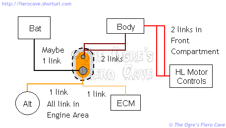
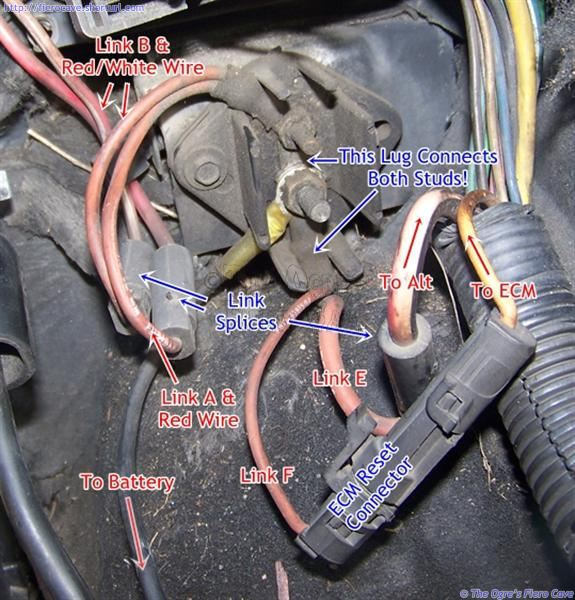

Go Home
Site Map
Go Home
Site Map
Fuzzy Fusing
Can You Smell That Smell?
The first thing you'll notice about fusible links in most cars is that they aren't covered in normal insulation. It's some sort of rubbery stuff that smokes like crazy when a link burns out. It's made to do just what it does and as much as it smokes, it's not likely to set the car on fire... The insulation is specifically made to stay together when the link fries. That way the remaining pieces shouldn't be able to short against something else.
Most links also have some type of label to identify them. In U.S. made cars the words "Fusible Link" usually appears on the wire insulation. (Insulation markings may also include the link wire gauge.) Many have a tag molded onto them or into an over sized insulator at one end.
On some import vehicles, they use stamped metal fuse links. These are screwed down in a large terminal block under the hood. Many newer cars do away with the traditional fusible links completely. They use various types of large cartridge fuses instead.
No matter what size type or style they are they must be installed and sized correctly. You must never replace one with normal wire!
The Missing Link
An end broke off a good link... A link burned... etc...
Replace it. Replace it. Replace it. Shortening the link will change its calibration. There is no other acceptable repair but replacing the defective link.
Installing a new link
As I warned you in the main article, you must use crimp terminals to install new links. Replacement links are cheap and available thru most parts stores. They nearly always come pre cut and stripped. Do Not alter them! Always remember that the current rating of a fuse link it determined by both the wire size and the length. If you shorten the link then its current rating goes up and that's a bad thing for a fuse.
You've got to keep water out of them. Due to their construction, Fuse links tend to rot even faster than regular wire when soaked. Instead of rotting all the way thru, they usually rot part way and then blow out. (Often right about the same time you need some small thing like headlights or the radiator fan.)
When repairing fuse links in the engine bay, I strongly recommend crimp terminals that come with weatherproof heat shrink tubing on them. These cost more but will seal out water to prevent corrosion of the wire. The weatherproof tubing is lined with hot melt sealer. Don't forget to degrease the wires to get the best seal.
Some replacement links come with ends crimped on. Other people may not be able to get the weatherproof stuff. Regular insulated terminals can be packed with RTV silicone or Dielectric grease to keep out water.
Link spec's
Four gages smaller than the protected circuit and approximately 10 inches long. This allows 1/2in on each end for connections.No Solder?
NO! No Solder. Solder have problems because Most people have very poor to no soldering skills, like use way too much solder to make a joint and any extra solder can/will wick along the link effectively shortens the link.
Should there be a Fuse Link in a ground wire?
Normally cars are not built that way however to reduce inventory many companies build all battery cables as "positive" assemblies. (This includes AC Delco.) This means that cables for the battery ground may have a fuse link in the thin wire on them. This doesn't usually cause a problem so just use the cables as made.
Fuse link sizes and location
Fiero fusible links are metric like nearly everything else. That means wire size is measured by the cross sectional area of the conductor in square mm. The following table is pulled from GM diagrams and some vehicle inspection.
| Link | What | Size (mm²) | Color | Notes |
|---|---|---|---|---|
| A | Most of the car | 1 OR 2 | RED | Go to Red wire |
| B | Headlight Lamps (Link C & D) | 1 | RED | Go to Red or Red/Wht wire |
| C, D | Headlight Lift Motors | .35 | RED | Cascaded from Link B |
| E | Alternator | 3 | Rust | |
| 5?? | LT GRN/BLK | 5 seems awfully large | ||
| F | ECM | .5 | RED or ORN | |
| G | ECM (Old L4) or Cold Start (V6) | .5 | Rust | Not used all years |
| H | HEI Coil | .5 | Rust | Not used with DIS |
| Battery | 2 | Not OE |
A, B, E, and F are connected to the distribution terminal. This is under C500 in 1985-88 models.
1984 Fiero, A and B on starter and F on alternator/battery.
Size of Link A may vary by year/model/options. Later models are 1, older ones are 2, No I don't know exactly when they changed. All 87's show 1 in their drawings. If in doubt use a 1 sq mm link.
Link B goes to Red wire in 85-86 models and Red/White wire in 84, 87-88 models. Made harder to tell which is Link A and B in older cars. If wires are both plain red then go by wire size. Link B is connected to the smaller wire.
C and D are in the front compartment on the left inner fender between the brake MC and the tire support wall. These are cascaded below Link B.
According to older drawings, Link E is either 3 or 5. I can't imagine any Fiero using a 5 in the alternator feed. That has to be a typo. My 87SC L4 runs a 100-amp CS130 alternator and still only uses a 3. (The "rule" of fuse links is that they are supposed to be 4 (four) sizes smaller than the wire they are protecting. The wire to the alternator is 8 sq mm. According to the link rule a 5 sq mm link is way too big.) I left it there since it shows up in multiple drawings like that.
G is on the starter solenoid. It is not used in all years. (Good thing. This was always a crappy place for them.)
H is in C500. You will need C500 pin, wire, and fuse link, to repair it. (It isn't used with DIS motors.) Wire it as:
The battery link isn't installed from the factory. AC Delco replacement cables come with a 2 installed so I listed it for reference. Adding this link isn't a bad idea... This way you have some extra protection if you drop a wrench against the main lugs or the back of the alternator.
Emergency replacements
Always use the Metric sized links when possible! The problem of course is you might have a hard time finding metric fuse links at many parts stores.The table below lists the AWG links that can safely replace a metric link in an emergency.
| Metric Link (mm²) | AWG Link |
|---|---|
| .35 | 22 |
| .5 | 22 |
| 1 | 18 |
| 2 | 16 (14) |
| 3 | 14 |
| 5 | 12 |
These sizes are based on a table from TNT Audio. The U.S. (AWG) sizes are as close as you can get and not go over the metric size. These links may not carry the full load of the OE links! Using the exact Metric size is always preferable to the alternate. (In a pinch, it is ok to install a smaller fuse in a circuit but never a bigger one. This is just the opposite of regular wire where you can always use a heavier gauge than the original.)
I listed two AWG numbers for the 2 sq mm because the 14AWG wire is very slightly heavier than 2 mm2. (For the others, the next AWG size larger was much larger, which is unacceptable.)

More about the Main Terminal Block
Here's a rough map of the lines with fuse links and how they are connected to the main terminal block.

Note that the lug on the alternator and ECM wires spans both terminals. Even if both wires break/burn off that lug, you have to keep the remaining piece. (Or make something to replace it.) You'll have to use regular ring terminals on the replacement fuse link(s) to connect them to the terminal block.
Many people run accessory loads directly off the battery. The correct location for these loads is really the main terminal block. Heavy loads go to the large lug. Lighter loads can go to either. No matter which lug is used the new equipment MUST have it's own fuse(s)!
Note: ECM "Reset connector" (C501) moves depending on which engine and year of car. Only 84 Fiero ECM reset connector is different, Alldata/84FSM says C501-LH Rear Of Engine, IE on the motor. All other Fiero should be as shown below, C501-Near Battery Junction Block.
Example: This from 87 4 cyl...


Wire Conversion
I included this just to have it handy...
This table shows common metric sizes and the nearest common AWG wire. The AWG wire listed is heavier than the metric wire. This table is for standard wire only! Do not use this table to convert from AWG to metric!
| METRIC TO AWG CONVERSION | |
|---|---|
| Metric Size (mm²) | AWG Size |
| 0.5 | 20 |
| 0.8 | 18 |
| 1.0 | 16 |
| 2.0 | 14 |
| 3.0 | 12 |
| 5.0 | 10 |
| 8.0 | 8 |
| 13.0 | 6 |
| 19.0 | 4 |
| 32.0 | 2 |
| 52.0 | 0 |